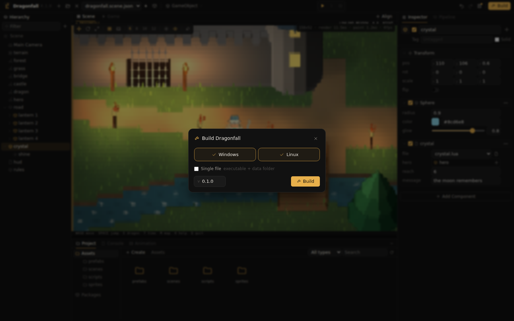

Build
A build is a folder per platform containing the game's player, the project compiled into one data file, and a list of checksums. Players need no installation; a terminal with 24 bit color is sufficient.
From the editor

- Press Build in the toolbar or Ctrl+B.
- Select the platforms and the version; the version is stored in the manifest. Single file builds one executable per platform instead of a folder.
- Press Build. Unsaved changes are saved first, so the build matches the editor.
- Show opens the output folder.
build/linux/Dragonfall/
Dragonfall the player
data/game.pak the compiled project
SHA256SUMS
build/windows/Dragonfall/
Dragonfall.exe
data/game.pak
SHA256SUMSA single file build is the player with the compiled project appended, together with a .sha256 file.
Players
The player is the ascdii program itself: started with game data, it plays the game. The editor takes the player for its own platform from the ascdii next to it, and the player for another platform from a file named ascdii-<os>-<arch> in the same folder, for example ascdii-windows-amd64.exe next to a Linux editor. The release archives contain both; platforms without a player cannot be selected in the build dialog.
game.pak
- It contains only what the game uses: the manifest, scenes, prefabs, materials, animator controllers, scripts, sprites, textures, models and sounds. Notes, other files,
.gitignoreand thebuildfolder are left out. .metafiles are not included; their ids and import settings are compiled into one index inside the pak.- The pak is compressed and encrypted, so the build cannot be browsed or opened as a project.
From the command line
# a folder build for this platform, in build/Quest
ascdii build ~/games/quest
# one executable
ascdii build ~/games/quest -single
# another platform, with that platform's player
ascdii build ~/games/quest -player bin/ascdii-windows-amd64.exe -out build/Quest-winRunning a build
./Quest/Quest # Linux
Quest\Quest.exe # Windows
cd Quest && sha256sum -c SHA256SUMS # verify the files
./Quest/Quest --preview -size 160x50 -time 2 # one frame as text, without a terminalThe player first looks for data appended to itself, then for data/game.pak next to it; the two must stay together when a folder build is moved.